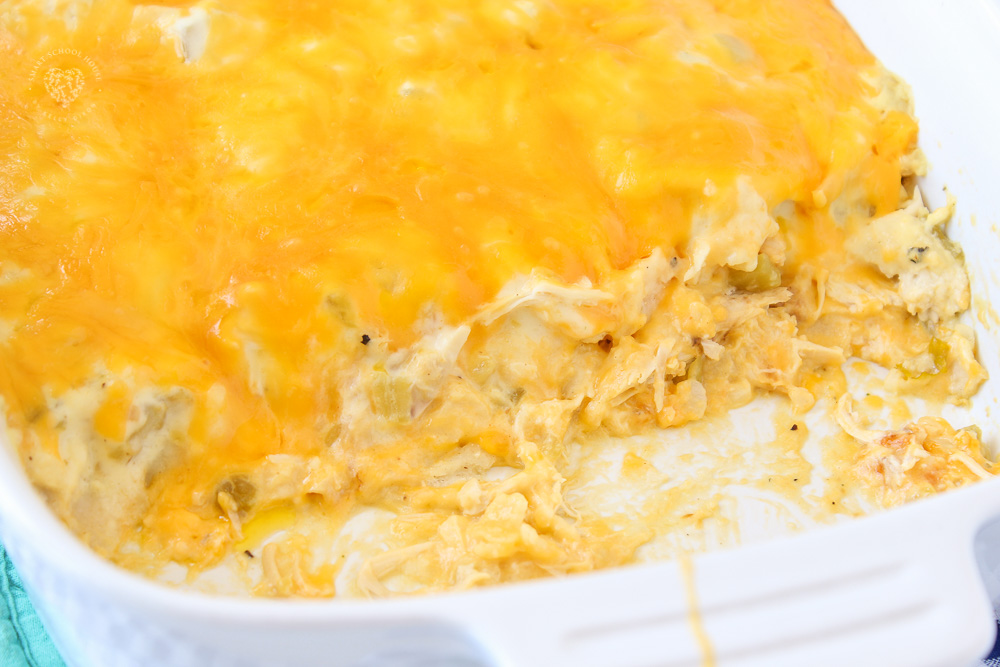

Sour Cream Enchilada Casserole

Description
This is a dish I loved as a child and still love now. My mom got it out of a women's magazine in the 70s and it is my #1 comfort food to this day.
Ingredients
- Cream of Chicken soup concentrate, 2 cans
- Sour cream, 16 oz.
- Monterrey jack cheese, 8 oz., grated
- Green chiles, 8 oz.
- Corn tortillas, 1 package
- Cumin, 1 tsp.
- Optional: black olives, 4 oz.
Steps
- Preheat the oven to 350F.
- Reserve 2 oz. of the grated cheese for later.
- In a large bowl, mix soup, sour cream, the rest of the cheese, green chiles, optional olives, and the cumin until well mixed.
- Using a rubber spatula, spread a thin layer of this mixture in the bottom of an 11x14 baking dish.
- Tear the corn tortillas and make a layer of them in the bottom of the pan.
- Spread a layer of the mixture over these, and continue layering tortillas and the mixture until it is all used up. The top layer should be of the mixture.
- Sprinkle the reserved cheese over the top.
- Bake at 350F for 45 minutes or until top is golden brown.
- Cool and serve.